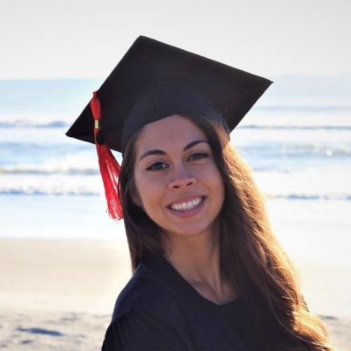

About Me
My name is Jonelle, and I am a beginner coder focusing on learning full stack.

I have a background within the healthcare system, but I decided to pick up coding as a career change within the future. I graduated from the University of Central Florida in May 2020 with a bachelors degree in health service adminstration. With my degree, I was able to land a position as a lab registration representitive. I hope that one day, I will be able to further my passion for coding and eventually earn a degree within the same industry.
In my free time I enjoy hiking, running, and volunteering whenever the opportunity is there.